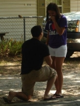

Family and friends,
Welcome to our wedding website!
Here you can read about us, the proposal and get all sorts of wedding information.
We can't wait to get married and see you all on March 5th!
Love,
Skyler and Staci
Skyler & Staci
March 5th, 2011
''Our mission in life is to love, give and encourage in relationships through teaching and hospitality.''
About Us
About the Bride
Name: Staci LeAnn Harp
Age: 24
Hometown: Denison, TX
College: Oklahoma Baptist University
Career: Nurse
I love: I'll start with the obvious...Skyler, my family, smiling just to smile, my AMAZING friends, rainy days except when I'm working, using my job to share Christ's love, being silly, reading a good book, my grandma's apple pie, bright colors, homey spaces, killing people with kindness when they insist on being rude, jeans from ebay, finding a bargin and most of all, maybe even more than Skyler, my AMAZING Savior who is always with me and alive inside me.
Age: 24
Hometown: Denison, TX
College: Oklahoma Baptist University
Career: Nurse
I love: I'll start with the obvious...Skyler, my family, smiling just to smile, my AMAZING friends, rainy days except when I'm working, using my job to share Christ's love, being silly, reading a good book, my grandma's apple pie, bright colors, homey spaces, killing people with kindness when they insist on being rude, jeans from ebay, finding a bargin and most of all, maybe even more than Skyler, my AMAZING Savior who is always with me and alive inside me.
About the Groom
Name: Skyler William Gast
Age: 23
Hometown: Waco, TX
College: University of Texas at Arlington
Career: Software Developer
Likes: Staci!!, Lifegroup, Golf (when I can), Deep conversations, Cowboys and Colts (football, not guys on horses), Starcraft 2 (yes, I'm a nerd)
Dislikes: Heights, Materialism, Being late
Age: 23
Hometown: Waco, TX
College: University of Texas at Arlington
Career: Software Developer
Likes: Staci!!, Lifegroup, Golf (when I can), Deep conversations, Cowboys and Colts (football, not guys on horses), Starcraft 2 (yes, I'm a nerd)
Dislikes: Heights, Materialism, Being late
Our Story
We met at Mercy Place at Lifegroup in September, 2009. Over the next few months we got to know each other
through Lifegroup events, MP functions [She dominated in Turkey Bowl]
and other group things, two significant ones being Hailee's Ugly Sweater Christmas party and New Years Eve.
We started dating in January of 2010 [the exact date was January 23] [I know.. I know.. Why did it take me so long?!]. January to August was full of great times: we started to co-lead our Lifegroup, took a few weekend trips together to see friends and family, took Staci to the driving range, beat Skyler in almost every game we played and many other fun and memorable things.
We got engaged August 21st and have been growing closer and getting to know each other more every day. We know that God has brought us together and has great plans for our marriage!
We started dating in January of 2010 [the exact date was January 23] [I know.. I know.. Why did it take me so long?!]. January to August was full of great times: we started to co-lead our Lifegroup, took a few weekend trips together to see friends and family, took Staci to the driving range, beat Skyler in almost every game we played and many other fun and memorable things.
We got engaged August 21st and have been growing closer and getting to know each other more every day. We know that God has brought us together and has great plans for our marriage!
The Proposal

Skyler knew that my family and friends mean a lot to me so he asked me to marry
him in front of all my family and friends.it was perfect.
I went Italy with my mom the week before and before I left I told Skyler "don't forget my dad is in Dallas on Tuesday if you need to ask him anything". [I was already planning to ask.] Later found out that he did have dinner with my dad and asked him. He was so nervous that he had everything he wanted to say written out.
When we got back from our trip, Skyler was adamant about going to my house for just a Friday night. [I tried to make it seem like her idea; I guess it didn't work...] He said that I would probably want to show off pictures from my trip. So I didn't turn down an offer go to home even if it was for just one night.
On Saturday, we went to Saturday morning breakfast with my Memaw and Aunt Jimi Lou which has been a tradition in our family for years. I later learned that my Aunt Janet was there and had to leave with the kids before Skyler and I got there. So after breakfast Memaw asked us to come over for lunch which isn't an unusual thing because we have lunch at Memaw's quite often. After we had breakfast, Skyler tried to keep me occupied until noon so we went shopping, to sonic and then a park by my house. Then we went to lunch at my memaw's and we pull up to the house and there were tons of cars there and I asked him what was going on and he grabbed my hand said "just come on". So I followed and then when we got around the corner and saw everyone then Skyler got down on one knee and asked me to marry him and of course I said YES!!!!!!
I can't even remember if he asked or if I just said yes. He also said "Staci, I love you and want to spend the rest of my life with you". This was a really big deal because we had never said those words to each other. It was such a wonderful time and I was so happy that we all my friends and family were there to celebrate with us. [Thanks for keeping it a secret for 2 weeks!] I could not imagine a more perfect proposal. Oh and to make it even more special later on that day Skyler gave me a journal that detailed the ring shopping, asking my dad and all the planning that went into the big day. He also added a couple of pages of sweet letters to me.
I'm so thankful to God who brought us together and who we know will keep us together as one forever. I can't wait to marry Skyler!!! I can't wait to marry Staci!!!
I went Italy with my mom the week before and before I left I told Skyler "don't forget my dad is in Dallas on Tuesday if you need to ask him anything". [I was already planning to ask.] Later found out that he did have dinner with my dad and asked him. He was so nervous that he had everything he wanted to say written out.
When we got back from our trip, Skyler was adamant about going to my house for just a Friday night. [I tried to make it seem like her idea; I guess it didn't work...] He said that I would probably want to show off pictures from my trip. So I didn't turn down an offer go to home even if it was for just one night.
On Saturday, we went to Saturday morning breakfast with my Memaw and Aunt Jimi Lou which has been a tradition in our family for years. I later learned that my Aunt Janet was there and had to leave with the kids before Skyler and I got there. So after breakfast Memaw asked us to come over for lunch which isn't an unusual thing because we have lunch at Memaw's quite often. After we had breakfast, Skyler tried to keep me occupied until noon so we went shopping, to sonic and then a park by my house. Then we went to lunch at my memaw's and we pull up to the house and there were tons of cars there and I asked him what was going on and he grabbed my hand said "just come on". So I followed and then when we got around the corner and saw everyone then Skyler got down on one knee and asked me to marry him and of course I said YES!!!!!!
I can't even remember if he asked or if I just said yes. He also said "Staci, I love you and want to spend the rest of my life with you". This was a really big deal because we had never said those words to each other. It was such a wonderful time and I was so happy that we all my friends and family were there to celebrate with us. [Thanks for keeping it a secret for 2 weeks!] I could not imagine a more perfect proposal. Oh and to make it even more special later on that day Skyler gave me a journal that detailed the ring shopping, asking my dad and all the planning that went into the big day. He also added a couple of pages of sweet letters to me.
I'm so thankful to God who brought us together and who we know will keep us together as one forever. I can't wait to marry Skyler!!! I can't wait to marry Staci!!!
Wedding Party
Bridesmaids
Molly Dunn - Maid of Honor
Julie Bates
Erin Cluley
Hailee Christal
Samantha Gast
Meredith Harrison
Melissa Perry
House Party
LeeAnn Beard
Savannah Gaston
Tiffany Hines
Chrissy Perez
Groomsmen
David Sims - Best Man
Mike Cluley
Kyle Harp
Sean Isbell
Scott Perez
Sunthosh Sivam
Danson Worley
Ushers
James Mulvey
Jarod Olds